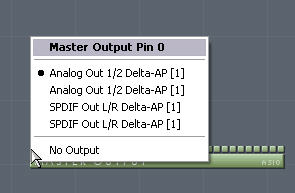

Getting started : a few steps to have
Aodix running
Before beginning to work with Aodix v4, please
make sure that you have the following items :
- Aodix v4 properly installed
- at least one VST instrument, installed in a folder where you keep all your VST
plug-ins
(plug-ins may be stored in subfolders of this folder).
- audio card properly installed and running, with operational speakers, and ASIO
driver
(native or emulated).
- if you plan to use a midi keyboard, have it connected and turned on before
running Aodix.
If the list is successfully checked, you can now run Aodix v4 for the first time and have it properly configured.
Open Aodix
Just click on the Aodix link in the start menu
folder item where it should be according to installation. Usually :
Start Menu > Programs > Arguru Software > Aodix
Aodix v4 interface
Here is a brief description of the interface. All items will be explained in
details in the Interface Detailed Documentation section.
The Interface has 9 sections and 4 menus :
Sections :
Audio Master : transport controls, playing/recording/scrolling behaviors. Playing Time and midi-point counters, CPU usage. Display of Block Size value. You can set the following basic items : Tempo, Time Signature, PPQN.
Sequencer Edit: Editing position counters. Total midi events counter. Quantize, midi channel, octave reference and Midi Mask settings. Zoom, Velocity and Pre-release settings. Note/Pattern Mode input. Select step-like operation, Overwriting events on/off. Switch Sequencer/Routing views.
VST Instances: load VST, select, mute and bypass instance. Unload instance (delete), import/export programs and banks, browse programs, open plug-in's native interface.
VST Parameters: parameter list of the plug-in loaded in the selected VST Instance. Tweak parameter, assign a physical controller to a parameter.
Information : displays information.
Vumeter: Master Output pin multi-vumeter
Main view: Main area displaying the Sequencer (patterns) or the Routing view (Instances and Wires).
File : file operation (new, open, save, import midi, bounce), configuration, exit.
Edit : clipboard operations (cut, copy, paste, select all, undo clipboard operation, quantize notes, interpolate values)
Help : this help file, about Aodix...
1. First of all, to have Aodix running, you must run the "File > Configuration" Menu :
Select "Configuration" in the "File" Menu, and click on
VST Path 1 item.
If the path is not set, browse to the correct VST
folder path. Aodix will access to all
plug-ins in that folder, and subfolders recursively. So you may install your
plug-ins in different subfolders of that VST Dir. Aodix handles up to 4 folder
roots.

2. Then, configure your ASIO driver :
Just click on the "Current Driver"
gadget and select the
driver you want. Aodix supports ASIO only. If your soundcard manufacturer does not provide
ASIO drivers, you may use emulated ones (like ones installed by some audio or
video software, or the Free ASIO4ALL driver).
If a warning mentioning an ASIO error appears, please close it and disregard it.
This happens when you configure the current driver for the first time.
3. Select your keyboard type and check the "Instance To Master Autolink" option
In the right pane of the configuration window :

Select your keyboard type, so you get proper keyboard operation.
Check the "Instance To Master Autolink" option so you may start easily. You may find it better not to select it when you get used to Aodix.
Then click on the "Apply Changes" button (in the left pane).
Reminder : if a warning mentioning an ASIO error appears, please close it and disregard it. This happens when you configure the current driver for the first time.
4. Assign Master Output pins to audio outputs
Switch to the Routing view : use the button showing the name "Sequencer" in the "Edit" Section. The button will toggle to "Routing".

Locate the
Master Output object.
Locate now the pins on the top of
that object. Some are blue, some are green. Click on the blue ones to check that they
are properly
assigned to an output. For
instance, if you have a two channel (Left, Right) audio card,
the pins are as follows :
audio Left , audio Right, audio Left, audio Right, audio Left, ... but sometimes
these outputs are not labeled as it should be (like in t he example below)...

5. Now what you need is a VST Instrument
to load
In "VST Instances" Section :
Just click on any empty slot in the "VST Instances" list, and you will see a popup list that reflects the structure of you VST Dir. Select an instrument from there.
When the instrument is loaded, it will be automatically connected to the master output, because the option "Instance to Master Autolink" has been checked in the configuration window.
Note : There is NO instrument provided with
Aodix V4. There are hundreds of free VST Instruments that you can get over the
internet. There are thousands you can purchase at a very reasonable price.
6. Make sure that the instrument plug-in name appears in the "VST Instances" list, and that it is highlighted
Begin typing on your PC keyboard or midi
keyboard, and your instrument begins producing sounds.
If you use a midi keyboard with an on/off button, make sure that it has been turned
ON before Aodix is started.
Now that Aodix is properly
configured, please consult the
Operation Guide Section of this
help.
Aodix Registration and Unlocking
If you have purchased an Aodix License, we
thank you very much for your interest in Aodix, and for supporting us.
You don't need to unlock Aodix, you will receive a full version in your mailbox.
Keep this data
in a safe place, and don't spread it. This full version has been sent to you
personally.
If you wish to purchase a license, please browse to our website www.aodix.com and check our Shop section.
If you use the demo version of the software, you will not be able to save your work.